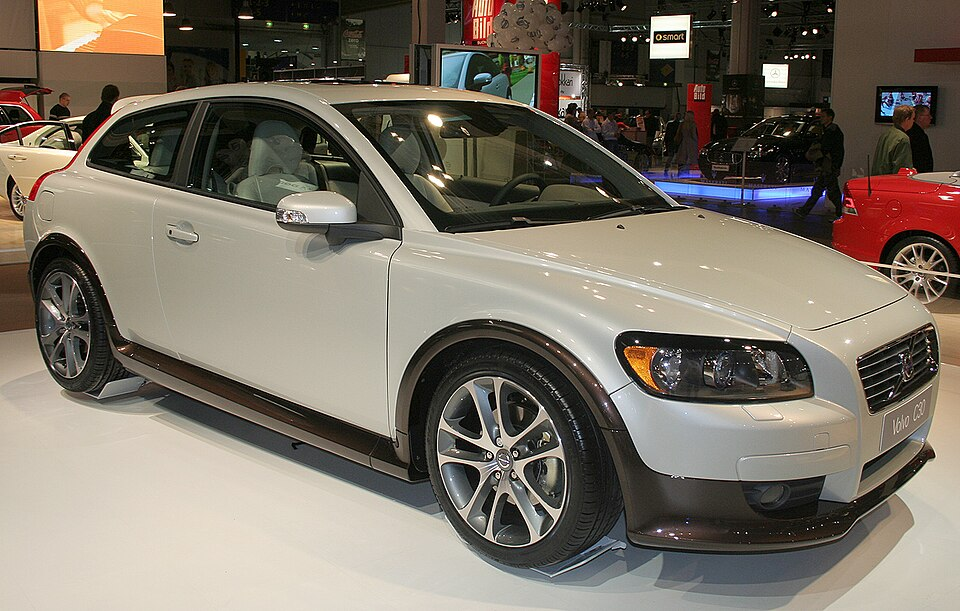
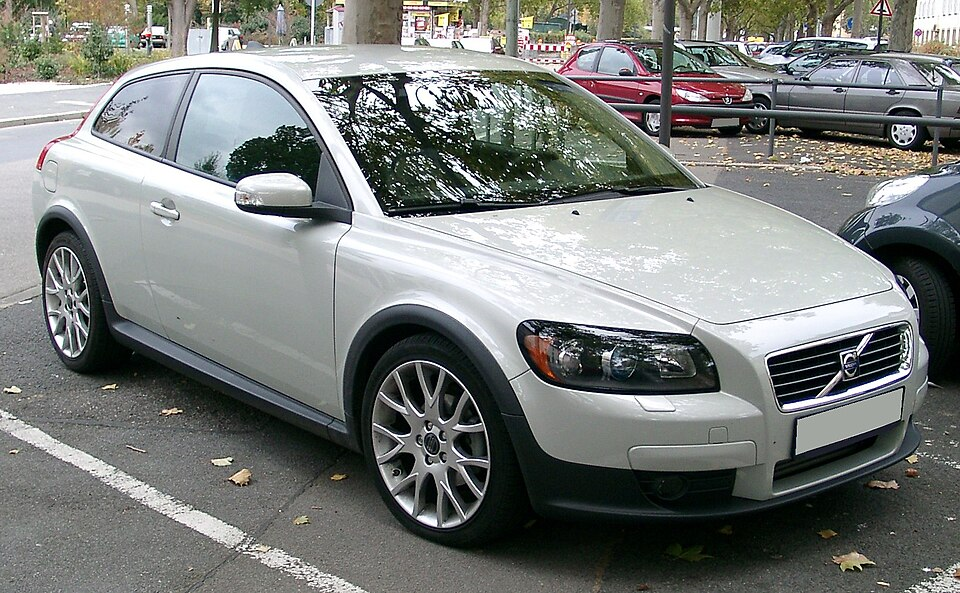
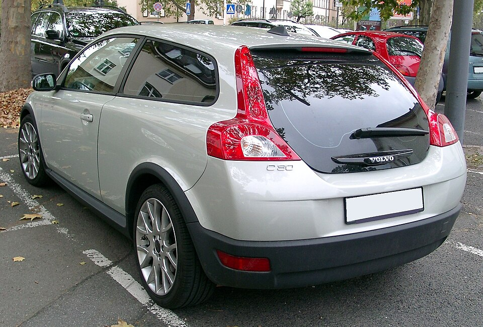
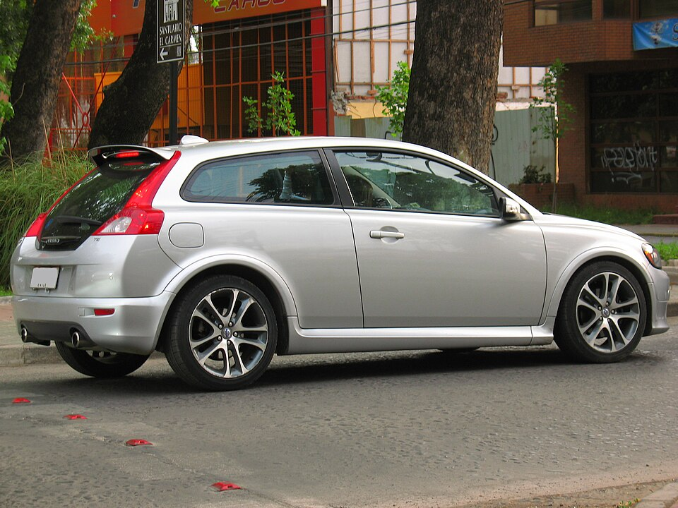
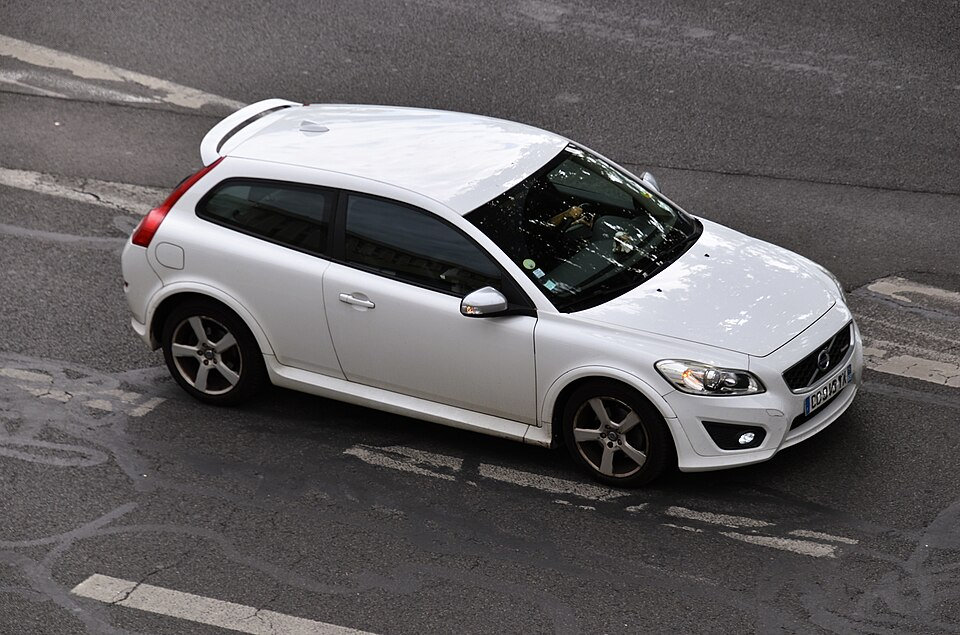
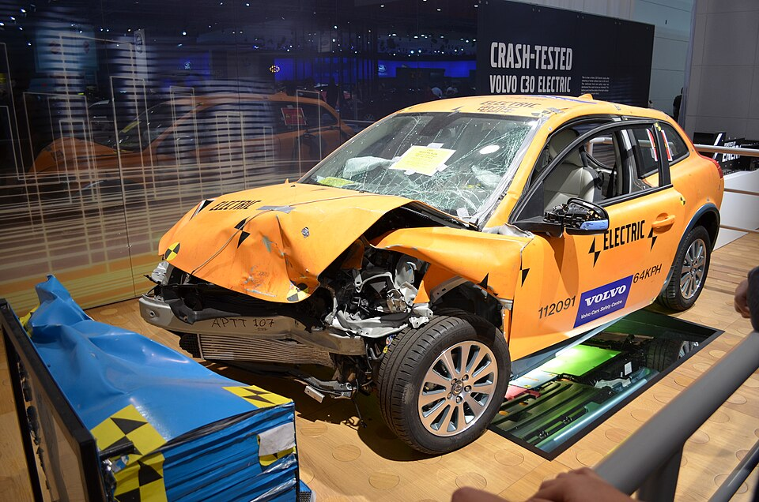
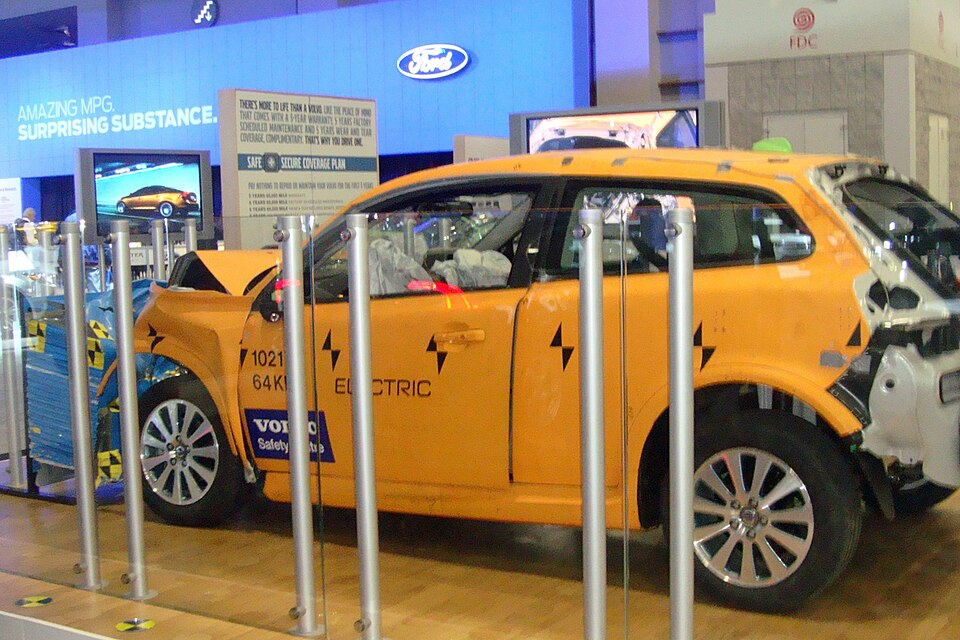

Gallery
A selection of photos of the Volvo C30: road cars, the electric version and a racing car, followed by a short slideshow.
Photos







Photo credits
Photos from Wikimedia Commons, used under their respective licences:
- “Volvo C30-HMS06.jpg”
- “Volvo C30 front 20071025.jpg”
- “Volvo C30 rear 20071025.jpg”
- “Volvo C30 T5 R-Design 2008 (13932866792).jpg”
- “Volvo C30 D3 (2012) (54727349831).jpg”
- “Robert Dahlgren 2010 WTCC Race of Japan (Free Practice 1).jpg”
- “Melbourne International Motor Show 2011 – 036 – 20110709 D5100 (361)”, photo by smjb (Flickr)
- “Volvo C30 Electric WAS 2011 849.jpg”